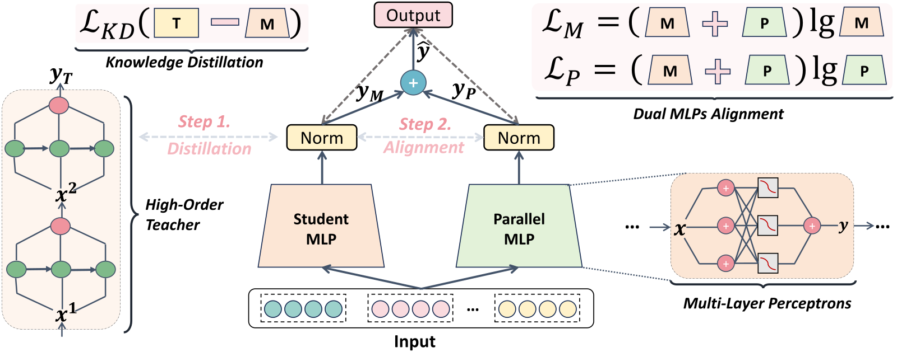
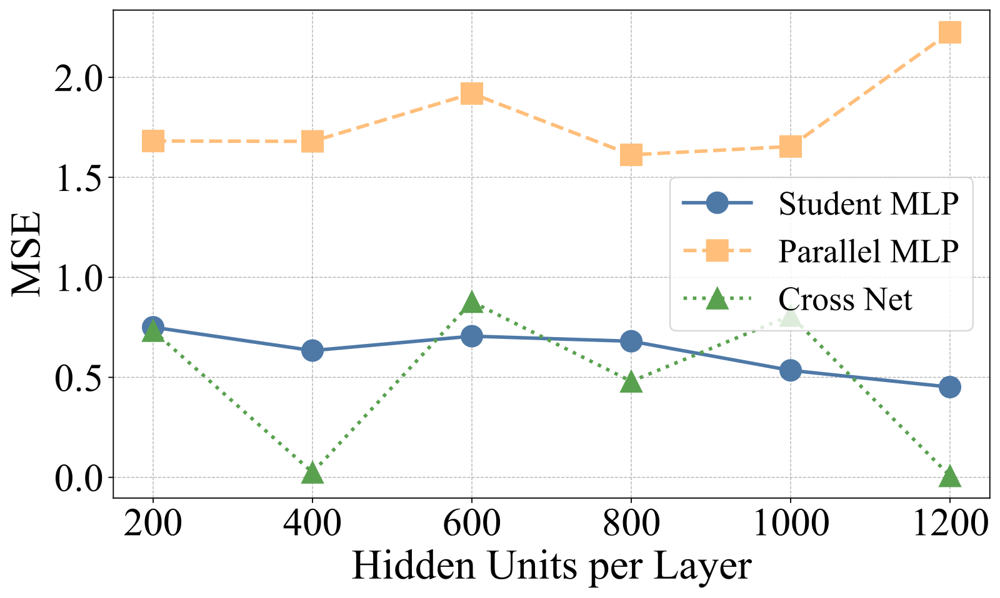
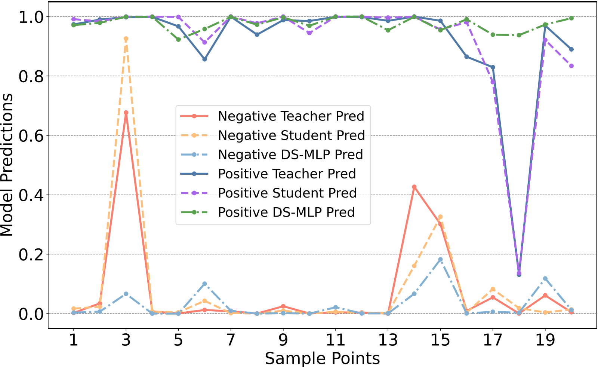
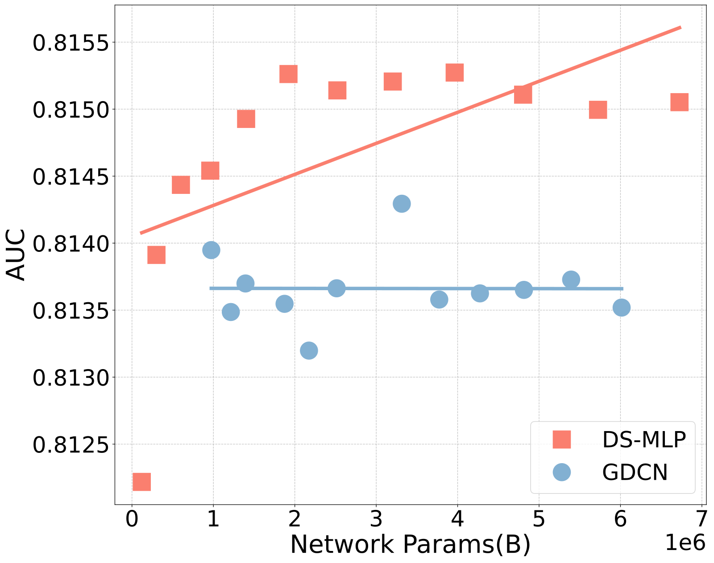

目录 · 11 节
1它到底在解决什么问题？2先看全景3第一步：把老师的显式交叉蒸馏进一个三层 MLP4第二步：并联一个 MLP，用两种对齐让两路平起平坐5效果：领先多少，算不算数6换个老师也行吗7消融：哪一块在起作用8加大模型会更好吗9我认为它的局限10一个排序团队可以怎么试11结论维护 CTR 排序模型、又被各种特征交叉结构折腾得够呛的团队值得一读，但别指望大幅提升。它要解决的问题是：主流 CTR 模型（DeepFM、DCNv2、GDCN（Gated Deep Cross Network，门控 DCN）等）都是“双流”结构，一路用乘法显式构造特征交叉，一路用 MLP 隐式学习，两路输出直接相加；结构越复杂越难调，而且乘法那一路的输出会随交叉阶数变大，相加时容易压过 MLP 那一路。DS-MLP 的结论是：最终上线的模型只要两个普通 MLP 就够。一个 MLP 通过知识蒸馏学会老师模型的显式交叉，另一个从零学习、补上老师漏掉的模式，两路先做 batch normalization，再各自用点击标签监督，所以谁也压不过谁。作者在 Criteo、Avazu、MovieLens 三个公开数据集上和 17 个基线比较，DS-MLP 的 AUC 都是第一，但领先幅度很小，前两个数据集甚至低于论文自己给的显著线。
它到底在解决什么问题？
CTR 预估的输入是一堆离散特征：用户 ID、性别、广告类目、设备、时段等。单个特征的信息有限，真正有用的是组合，比如“晚上十点 + 手机端 + 游戏类广告”。怎么学这些组合，是 CTR 模型过去十年的主线。
两种学法的取舍：
| 学法 | 怎么做 | 代表模型 | 问题 |
|---|---|---|---|
| 显式交叉 | 用内积、逐元素乘法直接构造特征组合，叠几层就是几阶交叉 | FM、CrossNet、DCNv2 | 阶数越高结构越复杂、越难调；乘法让输出数值随阶数放大 |
| 隐式交叉 | 把所有特征拼起来过 MLP，让网络自己学组合 | DNN、FinalMLP | 学到了什么说不清，作者认为单靠它学不好显式组合 |
| 双流（两者相加） | 两路并联，输出直接相加 | DeepFM、xDeepFM、GDCN | 两路结构差异大，输出尺度不一致，一路容易压过另一路 |
作者把第三行的问题叫作不平衡融合：显式那一路做的是逐元素乘法，高阶交叉的数值会越乘越大；MLP 那一路经过 ReLU 之类的激活，输出范围有限。两者相加时，显式那一路就主导了最终预测。
先看全景

训练分两步，上线时只保留两个 MLP：
| 阶段 | 做什么 | 训练谁 |
|---|---|---|
| 0. 准备老师 | 先按常规训练好一个强 CTR 模型（Criteo 用 GDCN，Avazu 用 DCNv2，MovieLens 用 FinalMLP） | 老师 |
| 1. 蒸馏 | 冻结老师，学生 MLP 同时拟合点击标签和老师的预测 | 学生 MLP |
| 2. 对齐微调 | 加入并联 MLP，两路隐藏层做 batch normalization，总损失 = 融合预测的交叉熵 + 每一路各自的交叉熵 | 两个 MLP 一起 |
| 上线 | 两路 logit 取平均，过 sigmoid 得到点击率 | 只有两个 MLP，没有老师 |
第一步：把老师的显式交叉蒸馏进一个三层 MLP
老师 GDCN 每一层做的事可以这样理解：拿原始特征向量和上一层结果逐元素相乘，得到更高一阶的组合，再乘一个 sigmoid 门过滤掉没用的组合，最后加回上一层。叠 L 层就是 L+1 阶交叉。最终预测是这个交叉网络的输出加上一个普通 DNN（深度全连接网络，结构上就是 MLP）的输出。
学生是一个三层 MLP，宽度比基线常用的 400 更大：Criteo 上每层 600，Avazu 900，MovieLens 1000。损失是点击交叉熵加上 λ 倍的蒸馏损失，λ 在 Criteo 和 Avazu 上取 1.0，MovieLens 取 0.5。
为什么 MLP 能学会乘法结构？论文第 3.5 节给了一个理论论证：MLP 是通用函数逼近器，只要容量够，就能在输出上逼近老师；再假设函数足够光滑，输出接近意味着二阶导数也接近，而二阶混合偏导正好衡量两个特征之间的交互强度。这个论证的前提（光滑性、过参数化优化能收敛）在实际训练里无法验证，它说明的是“可能学会”，不是“一定学会”。
作者在实验里做了一个更直接的检查：合成一个只含三个类别特征的数据集，把老师 GDCN 整个模型对每个样本的输出当作标签，再分别算 GDCN 内部的 CrossNet 模块、学生 MLP 和并联 MLP 的输出与这个标签之间的均方误差，看谁能拟合这些显式交叉。

这张图可以读出两点。一是学生的误差比并联 MLP 低得多，说明蒸馏确实把老师的交叉模式传了过去，而并联 MLP 没有学老师，留给它去学别的东西。二是 CrossNet 本身的误差忽高忽低，这正是作者说的显式结构难优化，而 MLP 的曲线平稳得多。
第二步：并联一个 MLP，用两种对齐让两路平起平坐
作者在初步实验里发现，老师本身就是不平衡的双流，显式那一路主导预测，所以学生蒸馏到的也主要是显式交叉，隐式那部分被忽略了。补救办法是再并联一个 MLP，专门学隐式交叉。这个并联 MLP 不用老师的特征 embedding，而是从零学习，因为它的任务不是模仿老师。
两路训练方式不同，输出差别会很大，直接相加又会回到“一路压过另一路”的老问题。作者用了两种对齐：
| 对齐方式 | 做法 | 解决什么 |
|---|---|---|
| 隐藏状态对齐 | 两路的隐藏层都做 batch normalization，把每个维度按批内均值和方差标准化 | 两路输出落在相近的数值范围，谁也不会因为数值大而主导 |
| 预测对齐 | 除了融合预测的交叉熵，每一路单独再算一次点击交叉熵，分别乘 α 和 β | 每一路自己也要能预测点击，不能只靠另一路兜底 |
α 和 β 不能太大也不能太小。作者在 0.5 到 1.5 之间扫 α，效果在 1 附近最好：这是因为太大时两路被逼得几乎一样，失去互补；太小时对齐不够。各数据集最终选的 α 在 0.8 到 1.5 之间，β 在 0.6 到 1.2 之间，说明这组权重需要按数据集调。
并联 MLP 到底补了什么？作者挑了 20 个样本画出各模型的预测：

这个例子说明了蒸馏的一个代价：学生会把老师的错误一起学走。并联 MLP 不受老师影响，能在这些样本上把预测拉回来。不过这是挑出来的 20 个样本，只能当示意，不能说明整体上纠错有多频繁。
效果：领先多少，算不算数
实验沿用 BARS（CTR 领域的开源可复现基准）的设置：embedding 维度 10，batch 4096，基线的 MLP 都是三层 400。指标是 AUC（随机取一个点击样本和一个未点击样本，模型把点击样本排在前面的概率）和 LogLoss（预测概率与真实点击的交叉熵，越低越好）。论文表头写明，AUC 高 0.001 或 LogLoss 低 0.001 在 CTR 任务里就算显著。下表里出现的两个基线：FCN（Fusing Cross Network，2024 年的融合交叉网络，把线性和指数增长的交叉子网络合在一起）和 Final（2023 年的因子化交互层模型，用改造过的线性层显式学二阶交叉，和 FinalMLP 是两个不同的模型）。
| 数据集（样本量） | 最强基线 AUC | DS-MLP AUC | 差值 | DS-MLP 延迟 / 最快的强基线延迟（ms） |
|---|---|---|---|---|
| Criteo（4,584 万） | FCN 0.8149 | 0.8152 | +0.0003 | 59.43 / Final 25.56 |
| Avazu（4,043 万） | Final 0.7664 | 0.7670 | +0.0006 | 25.89 / Final 19.26 |
| MovieLens（201 万） | Final 0.9717 | 0.9752 | +0.0035 | 2.65 / Final 2.29 |
按论文自己的 0.001 标准，Criteo 和 Avazu 上 DS-MLP 相对最强基线的领先都不到显著线，只有 MovieLens 上是明确的提升。论文没有报告多次运行的标准差，也没有做显著性检验，所以 0.0003 这种差距很可能落在随机种子的波动里。
延迟方面，DS-MLP 在 Criteo 上是 59.43 ms，和 FinalMLP 的 56.71 接近，但比 Final 和 DeepFM 慢一倍多，比老师 GDCN 的 45.02 也慢。原因不难理解：学生每层 600 宽，再加一个并联 MLP，计算量并不比 GDCN 小。论文说的“简单高效”更多指结构单一、好部署，而不是更快。另外论文没说明延迟是按单条样本还是按一个 batch 测的。
换个老师也行吗
作者用五种不同结构的老师各训练一个 DS-MLP，和老师本身比较：
| 老师 | Criteo AUC（老师 → DS-MLP） | Avazu AUC | MovieLens AUC |
|---|---|---|---|
| AutoInt | 0.8138 → 0.8145 | 0.7634 → 0.7656 | 0.9688 → 0.9734 |
| DCNv2 | 0.8132 → 0.8147 | 0.7627 → 0.7670 | 0.9690 → 0.9728 |
| xDeepFM | 0.8136 → 0.8149 | 0.7639 → 0.7659 | 0.9685 → 0.9714 |
| GDCN | 0.8137 → 0.8152 | 0.7648 → 0.7662 | 0.9685 → 0.9737 |
| FinalMLP | 0.8147 → 0.8148 | 0.7659 → 0.7662 | 0.9716 → 0.9752 |
AUC 上十五组全部超过老师，这是全文最有说服力的一张表，因为它是同一框架对不同老师的稳定提升，而且多数组的提升超过 0.001。但 LogLoss 并非全都改善：以 FinalMLP 为老师时，Criteo 的 LogLoss 从 0.4374 变差到 0.4431，Avazu 从 0.3662 变差到 0.3675；以 DCNv2 为老师时，MovieLens 从 0.2139 变差到 0.2173。如果线上依赖校准后的点击率出价，这几组需要另做校准。另外，老师本身已经很强时（FinalMLP），Criteo 和 Avazu 上几乎没有提升。
消融：哪一块在起作用
| 配置 | Avazu AUC | Criteo AUC | MovieLens AUC |
|---|---|---|---|
| 完整 DS-MLP | 0.7670 | 0.8152 | 0.9752 |
| 去掉对齐损失 | 0.7641 | 0.8145 | 0.9703 |
| 去掉学生 MLP（老师直接和并联 MLP 融合） | 0.7652 | 0.8137 | 0.9669 |
| 去掉并联 MLP（只用蒸馏后的学生） | 0.7648 | 0.8140 | 0.9690 |
| 学生换成 CrossNet | 0.7639 | 0.8138 | 0.9708 |
| 去掉蒸馏（两个 MLP 从零训练） | 0.7655 | 0.8135 | 0.9715 |
有三点值得注意。第一，Criteo 上去掉蒸馏掉得最多，两个 MLP 从零训练只有 0.8135，和老师 GDCN 的 0.8137 差不多，说明 Criteo 上的提升主要来自蒸馏。第二，Avazu 上去掉对齐损失掉得最多，说明两路怎么融合在这里更关键。第三，“老师直接和并联 MLP 融合”反而更差，作者的解释是结构差异太大、对不齐，这支持了“先把老师变成 MLP 再融合”的思路。
再看“只用蒸馏后的学生”这一行和老师对比：Avazu 上学生 0.7648 比老师 DCNv2 的 0.7627 还高，Criteo 上 0.8140 和 GDCN 的 0.8137 持平，MovieLens 上 0.9690 却低于老师 FinalMLP 的 0.9716。也就是说，单独一个蒸馏 MLP 在不同数据集上可能超过老师，也可能不如老师，并联 MLP 才是让三个数据集都稳定领先的那一块。
加大模型会更好吗

论文据此说 DS-MLP 随容量增长持续提升，而 GDCN 饱和甚至下降。看散点会更谨慎一些：DS-MLP 在约 200 万参数后也已经饱和，拟合直线的上升主要来自左边几个很小的配置。这张图能说明的是，加宽 MLP 不会像 GDCN 那样不稳定，但说不上“越大越好”。Avazu 上的情况类似，DS-MLP 的点散布在 0.7647 到 0.7660 之间，GDCN 的波动更大。
我认为它的局限
第一，提升幅度和统计证据都偏弱。两个大数据集上领先最强基线不到 0.001，又没有多次运行的方差，结论“全部 SOTA”站得不太稳。
第二，总成本没有算全。上线模型是两个 MLP，但训练前必须先训好一个强老师，再蒸馏、再微调，整个流程要依次跑老师训练、蒸馏、对齐微调三轮。延迟也没有比主流双流模型低。
第三，方法描述前后不一致。第 3.1.3 节说蒸馏的是 logit、用带温度的交叉熵；算法 1 写的是对隐藏表示算 KL 散度；理论部分又用均方误差。融合方式也是一处写 logit 取平均、一处写概率按 γ=0.5 加权。复现时应以开源代码为准。
第四，embedding 表的数量不清楚。正文说并联 MLP 不复用老师的 embedding、从零学习，这意味着可能有两套 embedding；而对比表里又标注 DS-MLP 只用单个 embedding 表。CTR 模型的参数大头在 embedding，这一点直接影响线上内存。
第五，“显式那一路压过隐式那一路”是全文动机，但论文只给了文字描述，没有展示两路输出的数值分布。此外，超参数图里 MovieLens 的最高 AUC 约为 0.9711，和主表的 0.9752 对不上，可能是不同配置，论文没有解释。
一个排序团队可以怎么试
- 拿线上现有的交叉网络模型当老师，不必换成 GDCN，兼容性实验说明换老师基本都有收益。
- 先只做第一步，训练一个比现有 MLP 更宽的学生，看它单独能否追平老师；如果追平了，就已经得到一个结构更简单的模型。
- 再加并联 MLP 和两种对齐，α、β 从 1 附近开始调，同时盯 AUC 和 LogLoss，后者变差时要补校准。
- 用自己的线上延迟标准测一遍，不要假设它比现有模型快。
结论
一句话：把复杂交叉网络的知识蒸馏进 MLP，再并联一个独立 MLP 纠正老师的偏差，能得到一个结构单一、效果不输复杂模型的 CTR 模型，但离线提升很小，成本也没有省下来。
| 维度 | 评价 |
|---|---|
| 问题重要性 | 中。双流结构的复杂度和融合不平衡是真问题，但多数团队已有成熟方案 |
| 方法创新性 | 中。蒸馏加双 MLP 都不新，新在“先变成同构的 MLP 再对齐融合”这个组合 |
| 实验证据 | 偏弱。只有公开数据集，大数据集上提升低于显著线，无方差、无线上实验 |
| 工程成本 | 中。上线结构简单，但训练流程变长，延迟没有优势 |
| 是否值得尝试 | 可以小规模试。适合想把复杂交叉结构换成纯 MLP、便于部署和扩展的团队 |
讨论
欢迎补充实验细节、复现经验或不同看法。需 GitHub 登录。
正在加载讨论…